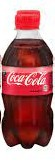
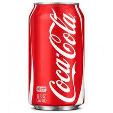

Coke
"Cokes... just drive in and get a Coke, if you're thirsty." -- Libby Mae Brown
Description
Ask anyone who's tried: it's difficult to eat 39 grams of sugar with a spoon. Not only does it lack the pizzazz of other food options, but "it's coarse and rough and irritating, and it gets everywhere." Enter Coke. Eating 39 grams of sugar has never been easier or more satisfying. In fact, 39 grams never feels like enough when it goes down with that lively fizz and piquant cola flavor.
Ingredients
- One 12 ounce can of Coca-Cola OR
- One 12 ounce bottle of Coca-Cola
Note: Coca-Cola can also be purchased in other amounts. You may purchase Coca-Cola in one of these alternate amounts, but the success of this recipe is only guaranteed with the 12-ounce size.
Steps
First, determine which type of Coke you have purchased.
This is a bottle.

This is a can.

Can you tell which one I prefer?
Steps for Bottle
- Hold body of bottle firmly in non-dominant hand.
- Grasp red cap firmly with dominant hand. Make sure that you are gripping the cap only and not including the safety seal ring in your dread grasp.
- Before proceeding, make sure that the bottle is upright. WARNING: Failure to orient the bottle in a roughly vertical position will cause the liquid Coke to fall from the bottle when opened!
- Twist cap to the left. This is the direction left: <---. When it comes to twisting, this direction is also called counterclockwise.
- Continue twisting until you feel the cap loosen from the bottle in your hand.
- Place cap in a safe area where you will remember it. WARNING: Failure to place cap where you will remember it will eliminate your ability to reseal your bottle of Coke. Proceed with caution!
- Drink Coke.
- Discard empty bottle.
Steps for Can
- WARNING: Though you have chosen the superior container of Coca-Cola, this container has no save option. You will not be able to reseal your can without special skills that are beyond the scope of this recipe. Proceed if AND ONLY IF you are prepared to consume the Coke inside the can.
- Force tip of index or middle finger under end of pull tab. Do not attempt to force finger under end of pull tab attached to can. Failure to heed this warning may result in extreme frustration.
- Pull up on pull tab in an arcing motion with finger while strongly bracing can top with wrist or thumb. Adaptation for beginners: If this complex motion sounds too difficult to complete, discard can, and obtain lesser bottle version of Coca-Cola. After mastering the opening maneuver of the bottle, you may be ready to give the can a try again. Take heart: Some drinkers of Coca-Cola go on to live fulfillng, productive lives without ever mastering the can-opening maneuver.
- Drink Coke.
- Drink all of it. You have chosen the can. The rest cannot be saved.
- Discard empty can.